マルゼン CA870 POLICE <FIRST別注モデル>
マルゼン「CA870シリーズ」は、代表的なポンプアクション・ショットガンである「レミントンM870」の外観と操作性を有しながらも、その実は「命中精度抜群のスナイパーライフル」だという「意表を突いたコンセプト」のトイガンとして知られている。
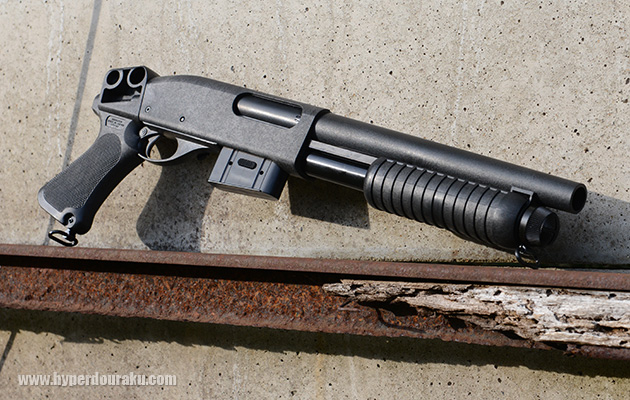
| スペック & 初速データ | |||||||||||||||||||||||
|
※東京マルイ ベアリングバイオBB弾 0.2g使用、ホップアップ適正、気温23.2度、湿度62.0%、10発、X3200 Mk3にて測定。 |
||||||||||||||||||||||
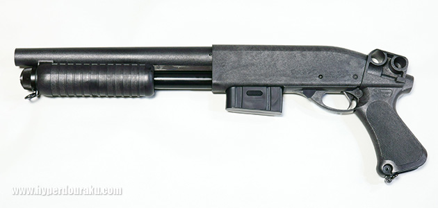
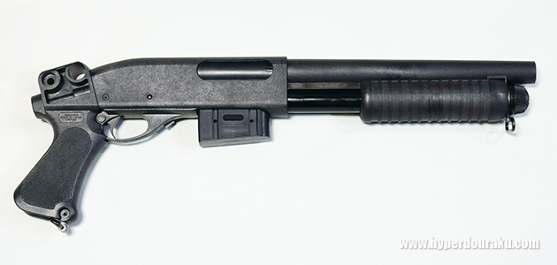
そんな押しも押されもせぬ大ベストセラー商品、マルゼン／CA870シリーズの特別な一挺＝「ガンショップFIRST別注モデル」がこのCA870 POLICEなのだ。
LE装備、すなわちブラックもしくは濃紺のキリリとした衣装や装備にバッチリ似合いそうな精悍オールブラック仕上げのルックスがSO COOL！ コッキング動作がしやすく、より正確なエイミングをサポートするピストルグリップを装備した、ひときわスタイリッシュで特別なショーティ・モデルとなっている。アウトドア、インドア、CQB、あらゆるサバイバルゲームで活躍できる事はもちろん、LEやSWATをイメージしたコスプレや、お手頃価格のブリーチャー等々、様々なシチュエーションで楽しめる一挺なのではないだろうか？
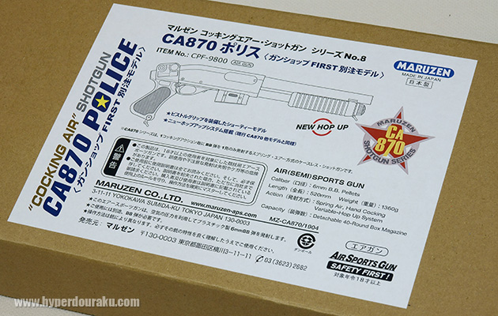
CA870 POLICEのパッケージはこんな感じ。警察で署員に支給されるアイテムのように簡素でシンプルなデザイン。
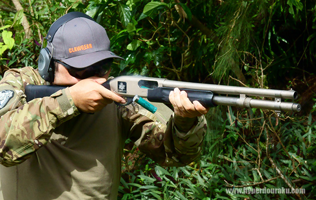
ポンプアクション式ショットガンといえばこの銃！ と、銃について知識のある人なら誰もがその名を挙げるだろう「名銃中の名銃」が実銃の「レミントンM870」である。開発されたのは1960年代中期だが、現代まで殆どその姿形を変えぬまま定番のベストセラーモデルとして君臨し続けている。その合理的な設計がもたらす抜群の操作性と高い耐久性・堅牢性はハンティングやホームディフェンスといった民間での使用のみならず、世界各国の軍・警察といった法執行機関からも絶大な信頼を寄せられている。写真のモデルは典型的なポリスショットガン・スタイルだが、防錆性に優れたクロームメッキ仕上げの「マリーナ」モデル。
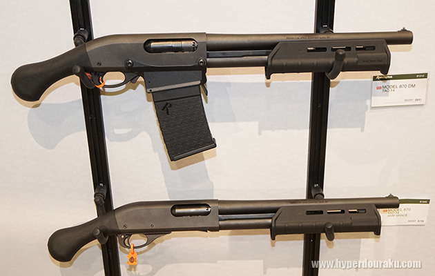
因みに最近のバリエーションにはマルゼン／CA870のような着脱式のBOXマガジン仕様のモデルも加わっている。
マルゼン CA870のバリエーション
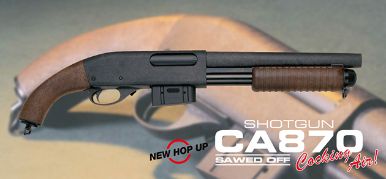
※画像提供MARUZEN
現在ラインナップされているマルゼン／CA870シリーズも紹介しておこう。シリーズで最初に登場した基本モデルがこの「CA870ソウドオフ」だ。銃身とストックをノコギリで切り詰めたショットガンをイメージした、ややクラシカルでワイルドなスタイルとなっている。
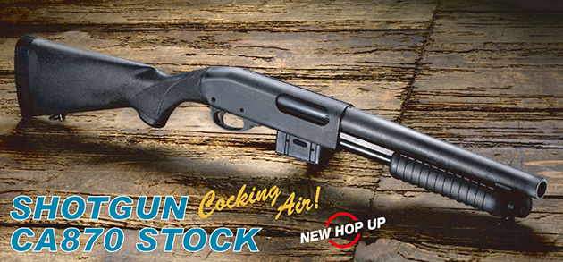
※画像提供MARUZEN
「CA870ストック」は「ソウドオフ」に固定式のバットストックを取り付けたスタイルであり、より遠くを狙い撃つのに適している。ポリスショットガンをイメージしてか、カラーリングはブラックで統一。この銃は過去にハイパー道楽でレポートしている。
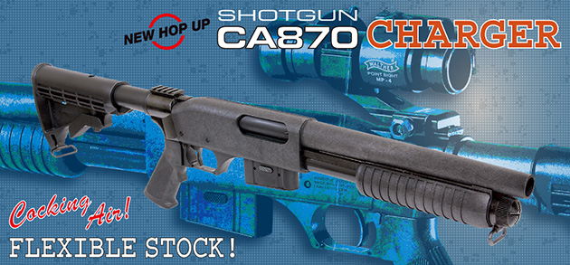
※画像提供MARUZEN
「CA870チャージャー」は基部に簡易型のピカティニーマウントを備えたM4スタイルのグリップと引き出し式ストックを備えたモデル。
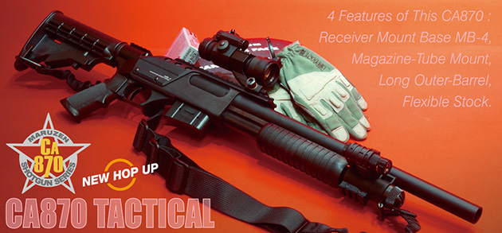
※画像提供MARUZEN
「CA870タクティカル」はチャージャーより60mm長いアウターバレルを装備し、さらに前方には3面マウントレールを、レシーバーにも通常は別売オプションのマウントベースを装着したメインウェポン仕様のスタイルとなっている。
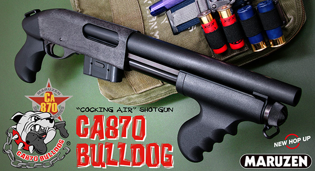
※画像提供MARUZEN
2019年4月18日にマルゼンから発売になったばかりの「CA870ブルドッグ」は、今回紹介している「CA870 POLICE」と近いコンセプトの最新バリエーションだが、ショップ別注モデルのCA870 POLICEがフォーマルかつ正統派なイメージなのに対し、ブルドッグはピストルグリップとフォアグリップの雰囲気がメーカー純正モデルなのにアウトローっぽい。面白い対比なのではないだろうか？
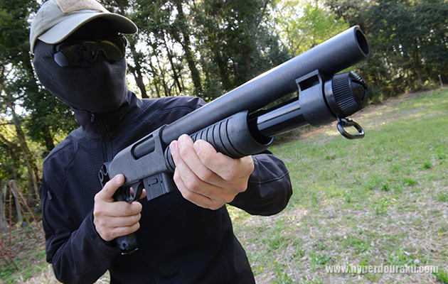
30年に及ぼうかという開催の歴史があり、いまや国内で最も権威があり参加者も多いBBスポーツガンの精密射撃競技「APSカップ」で培われた高精度スポーツライフル「APSシリーズ」のノウハウを引き継いでいるエアコッキング・システム。ポンプアクションの動作で1回コッキングする毎にBB弾1発が発射されるのだが、それなりに強いバネを圧縮しているとは思えない程にコッキングが軽く、その滑らかな操作性に驚かされる。
ちなみに、トリガーを引いたままフォアエンドを前後させる事で弾を発射する、いわゆる「ラピッドファイヤー」はCA870シリーズでは出来ない。無理をすると壊れてしまう可能性があるので注意して欲しい。
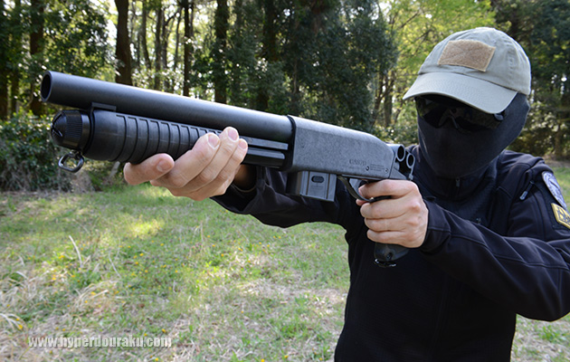
適正にHOPを調整したBB弾は標的に向かってスーッ！と伸びて行き、気持ち良いように命中する。難点を挙げるならストックなし、サイトもなし、の短銃身ショットガンのスタイルなので狙いをつけるのに一苦労（！）だった事だろうか（笑）。しかしエアコッキング・ガンだけに素晴らしく安定した弾道だったのは事実。季節や天候を問わずフィールドで安心して使えるCA870シリーズならではの頼もしさを改めて実感♪
また、自分なりにマウントやサイトを取り付けて使いやすくする愛用者も多い。
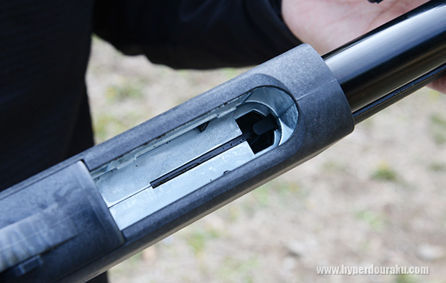
マガジンウェルから覗くのは頑丈なメタル・インナーフレーム。さらにこの銃は外装もグラスファイバー入りABS樹脂製なので、その軽快さからは想像もできない程ボディ剛性は高い。
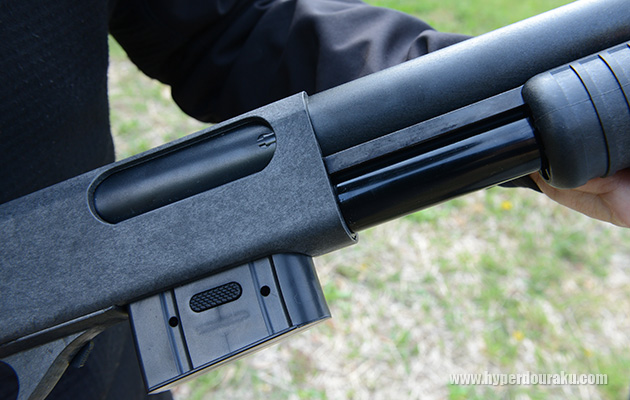
実銃レミントンM870の頑丈さと優れた操作性を決定づけたのはこの両サイド式の頼もしいアクションバー。CA870もそれに倣っている。「APSシアー」の搭載とも相まって、卓越したトリガーの切れとスムーズなポンプアクションを実現しているのだ。
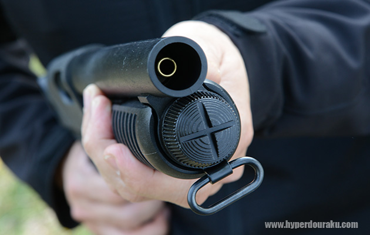
シリンダー容積との絶妙なバランスに基いて計算された長さ（短さ）のインナーバレルは少し奥まった位置までしか出て来ていないので、.12ゲージ・ショットガンならではの「迫力あるデカい銃口」の雰囲気は損なわれていない。
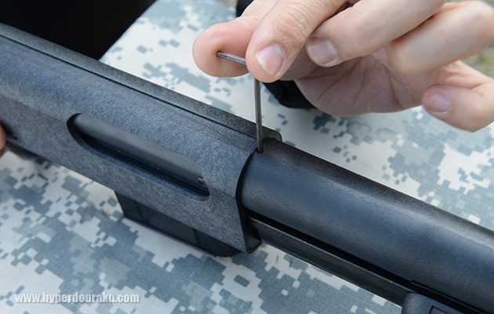
ホップアップの調整はアウターバレル基部の小さな穴に、製品に付属してくる2ｍｍ六角レンチを差し込み、調整スクリューを廻して操作する。微調整は「およそ1/8回転づつが目安」との事。
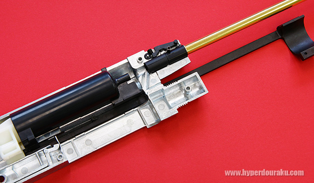
※写真提供MARUZEN
2014年以降の「CA870シリーズ」は全機種とも可変式の「ニューホップアップシステム」にリニューアルされている。マルゼンの精密射撃用ライフル「APSタイプ96」とほぼ同じ構造だそうで、チェンバーパッキンにも同じものが使われている。調整スクリューの先端がホップアップ・シーソーを上下させ、チェンバーパッキンに最適なホップアップ効果を与える構造。
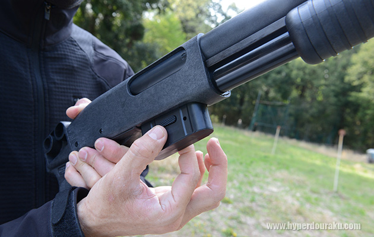
銃本体ではなくマガジンの方にキャッチボタンがある。左右両側で銃にロックされているので装着時には確実に固定され、外す際には両側のボタンを指先で挟むように押すとマガジンが気持ちよく抜けてくる。
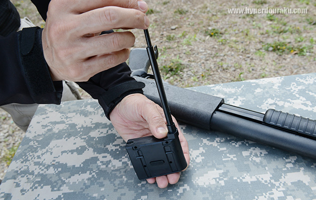
マガジンには専用のローダーでスムーズに装弾できる。こんなに小さいのにナント40発ものBB弾が入るのが凄い。さらにこのマガジン、別売価格が一個680円（税別）という安さも凄い！
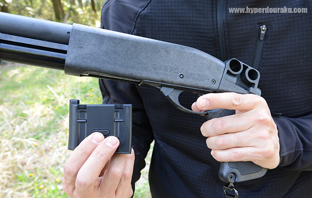
CA870が最初に発売された頃は「M870ショットガンなのに着脱式BOXマガジン仕様」とう点が賛否両論だった、という記憶がある。すなわち、「ユニークだし使い勝手が良い＝賛♪」 という人と、「でもレシーバー下部にマガジンが出っ張るのはリアルじゃない＝否！」という意見に別れたのだ。しかしいまや、本家のレミントンM870にも着脱式BOXマガジン仕様のモデルが登場しているので、もう違和感はない。
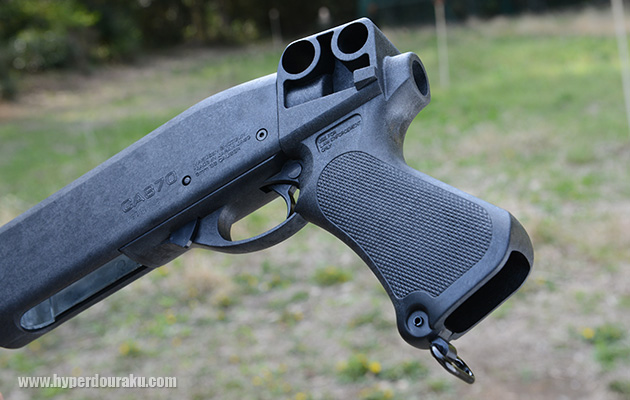
CA870 POLICEに装着されているグリップは、以前マルゼン純正のバリエーションで存在した「CA870フォールド」から金属製フォールディング・ストック部分を外して流用しているようだ。フォールディング・ストックはそれ自体にかなりの重量がありCA870の軽快性を損なってしまうのでこれは賢いチョイスだといえる。ちなみに本場アメリカの各ポリスデパートメントにある「ブリーチャー」の多くも、こうしてフォールディング・ストックのグリップ部分だけを利用した物も数多く存在するので、この仕様はかえってリアルでもある。
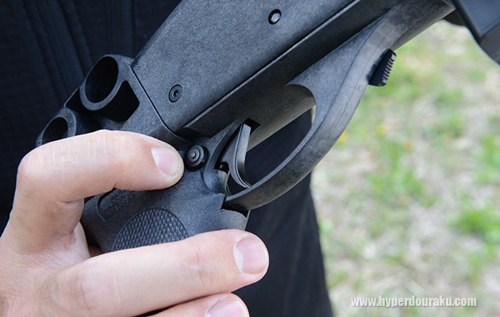
「クロスボルト式」と呼ばれるセフティボタンはこの位置にある。このように右側から押して「OFF＝発射可能」となる。
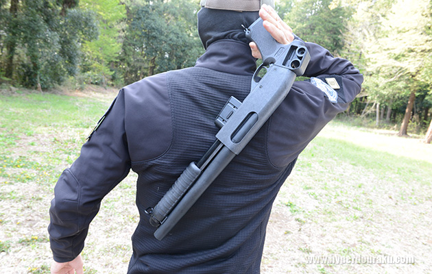
こういうショットガンを持つと、何故だかこんな風に背負って運ぶためのケース、「ショットガン・スキャバード」が欲しくなる・・・・・・（笑）。よし、今度の休み、ガンショップFIRSTに探しに行こう！
協力：FIRST、ビレッジ2
商品WEBサイトはこちら：マルゼン CA870 POLICE <FIRST別注モデル>
■関連リンク